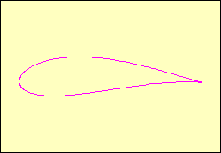

Complex number(3)
Applet
How to use this applet
Drag red point.
Press "Increase R " or "Decrease R" button.
The purple line is the trace of w.
If we move point a which is center point of circle of z or change R, the trace becomes as the wing of the plane like the right figure. Let's try!
